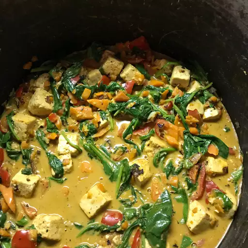

Tofu Stir-Fry with Peanut Sauce

Description
This throwback recipe for tofu stir-fry with peanut sauce is from years
ago when I was a hardcore vegan. Years later, it's still one of my
staples. It's healthy, filling, and full of flavor!
Ingredients
- 1 (14 ounce) can light coconut milk
- 1/4 cup peanut butter
- 2 tablespoons soy sauce
- 2 tablespoons brown sugar
- 1 tablespoon lime juice
- 1 teaspoon Sriracha sauce
- 1/2 teaspoon ground chili pepper
- 1 tablespoon olive oil
- 2 carrots, diced
- 1 red bell pepper, diced
- 1 (14 ounce) package firm tofu, drained and cut into 1-inch cubes
- 4 garlic cloves, minced
- 2 tablespoons minced fresh garlic
- 4 cups baby spinach
1-1/2 cups cooked brown rice
Steps
-
Whisk coconut milk, peanut butter, soy sauce, brown sugar, lime juice,
Sriracha sauce, and ground chili pepper together in a bowl until a
smooth sauce forms.
-
Heat oil in a large skillet over medium-high heat. Add carrots and bell
pepper; sauté until just tender, 1 to 2 minutes. Add tofu and sauté
until lightly browned, about 4 minutes per side. Add garlic and ginger;
cook and stir until fragrant, about 30 seconds.
-
Pour sauce into the skillet and stir to coat tofu and vegetables. Cook
until flavors combine, about 5 minutes. Reduce the heat to low, then
stir in spinach, 1 cup at a time, until wilted. Serve over brown rice.
Home